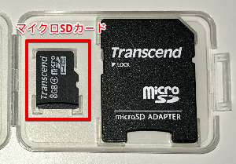
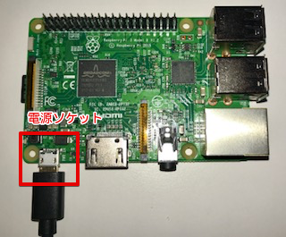
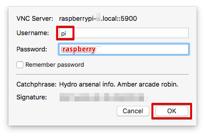
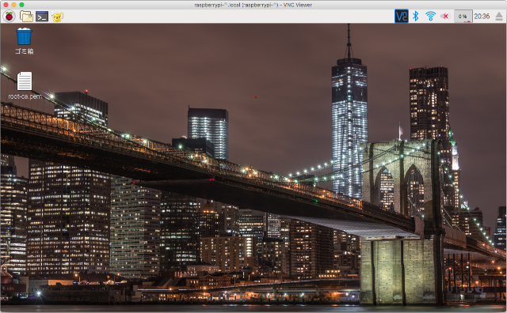
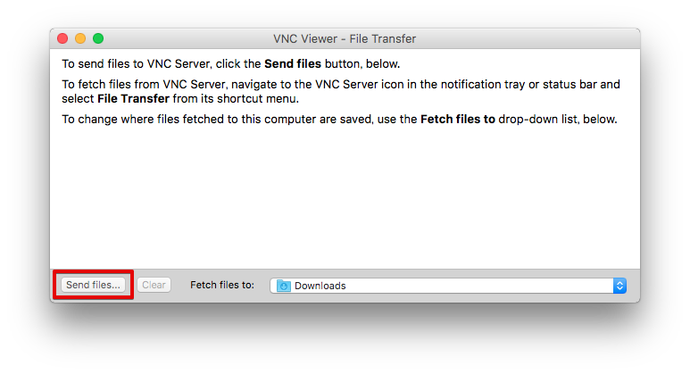
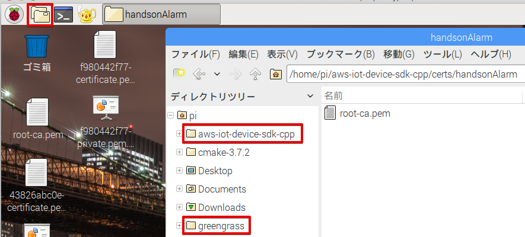

5. Raspberry Piの設定¶
5.1. ハードウェアの確認¶
下記の３つのハードウエアを確認して下さい。
① Raspberry Pi 3

② 電源アダプタ

③ マイクロSDカード
参加者番号の紙が入っています。確認して下さい。
5.2. 組み立て¶
SDカードをRaspberry Piに装着します。向きがあるので注意して下さい。

電源プラグをマイクロUDBソケットに差し込みます。
電源を投入すると、SDカードスロット右の赤LEDが点灯します。OSブートが始まり、SDカードへのアクセスがあると、、緑LEDが点滅します。
5.3. WiFi接続¶
お手持ちのPCをハンズオンのWiFiアクセスポイントに接続します。WiFi設定は、下記になります。
- SSID：awshandson
- パスフレーズ：awshandson
お手持ちのPCにインストールした、VNC Viewer を起動して下さい。下記の画面が表示されます。
接続先として、’raspberrypi-<参加者番号>.local’と入力して[エンター]を押します。

Username と、Password を入力して [OK] を押します。
無事、Raspberry Piに接続出来たら、Raspberry Piのリモート画面が表示されます。
Raspberry Piは、WiFi SSID = awshandson に接続するように設定してあります。 VNC Viewerでの接続ができれば、Raspberry PiもWiFiに接続出来ているはずです。
うまく接続出来ない場合は、Ethernet接続を試してみましょう。 Raspberry PiのEthernetは、固定IPアドレス 192.168.11.100 に設定されています。 PCとRaspberry PiをEthernetで接続し(ストレートケーブルでも構いません。)
PC側のIPアドレスを、192.168.11.xxx に設定して下さい。 VNC Viewerの接続先を、192.168.11.100 にして、接続してみてください。
5.4. ダウンロード済みの証明書をRaspberry Piにコピー¶
Greengrassコア、センサーデバイス、アラートデバイス用に証明書を３セットダウンロードしていました。 Raspberry Piに転送、します。VNC Viewrのタイトルバーの中心にマウスを移動させると、ツールが表示されます。矢印が交差したアイコンをクリックします。

ファイル転送の画面が表示されます。 [Send files...] ボタンを押します。
ファイルの選択画面が表示されるので、全ての証明書を選択して、[Open] を押します。

ファイルがRaspberry Piのデスクトップに転送されます。

設定のおさらい、
ここで、設定のおさらいをしてみましょう。Raspberry Piの設定邸のために記録した内容は、下記の様になっているはずです。
Greengrass core device: GGC_Thing-01
"certPath": "xxxxxxxxxx-certificate.pem.crt",
"keyPath": "xxxxxxxxxx-private.pem.key",
"thingArn": "arn:aws:iot:us-west-2:000000000000:thing/GGC_Thing-01"
AWS IoT endpoint
"endpoint": "xxxxxxxxxxxx.iot.us-west-2.amazonaws.com"
Alarm Device: Alert-01
"device_certificate_relative_path": "certs/handsonAlarm/yyyyyyyyyy-certificate.pem.crt",
"device_private_key_relative_path": "certs/handsonAlarm/yyyyyyyyyy-private.pem.key",
Sensor Device: Sensor-01
"device_certificate_relative_path": "certs/handsonSensor/zzzzzzzzzz-certificate.pem.crt",
"device_private_key_relative_path": "certs/handsonSensor/zzzzzzzzzz-private.pem.key",
Raspberry Pi 上の設定ファイルは、下記の3つになります。
- Greengrassコアの設定 /greengrass/configuration/config.json
- センサーデバイスの設定 /aws-iot-device-sdk-cpp/common/HandsonSensorConfig.json
- アラートデバイスの設定 /aws-iot-device-sdk-cpp/common/HandsonAlarmConfig.json
5.5. Raspberry Pi上のファイル¶
Raspbery Piのメニューバーをクリックしてファイラーを開きます。
- aws-iot-device-sdk-cpp AWS IoT Device SDK C++ のパスです。センサーデバイス、アラートデバイスのアプリが存在します。 証明書を格納するパスや、設定ファイル、アプリのソースコードが入っています。
- greengrass AWS Greengrass のパスです。 証明書を格納するパスや、設定ファイル、Greengrassコアが入っています。
5.5.1. アラートデバイス用の証明書¶
/home/pi/aws-iot-device-sdk-cpp/certs